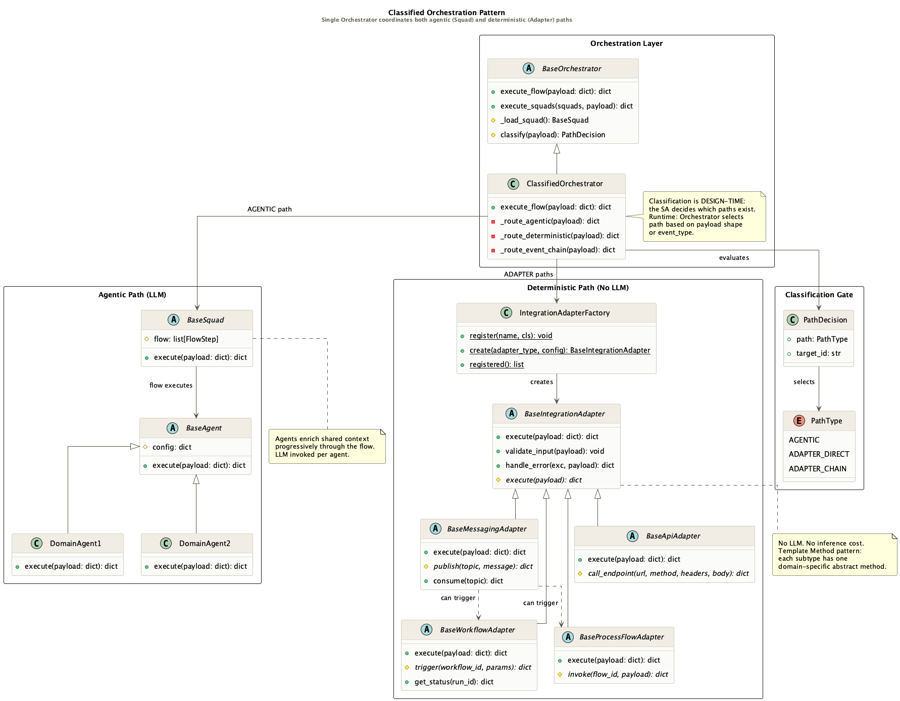

Motivation
Teams adopting agentic AI make one of two persistent mistakes: routing every task through an LLM even when a workflow engine or rules engine is the correct tool, or avoiding LLM-based paths entirely and missing the reasoning capability needed for classification, extraction, or evidence correlation.
The Classified Orchestration Pattern resolves this by making the decision explicit and architectural. The Solutions Architect classifies each task at design time — the Orchestrator enforces the selected path at runtime. The boundary is drawn in code, visible on the canvas, and not left for the LLM to decide.
Two Variants
├─ Squad → Agents → LLM
└─ IntegrationAdapter → system
↓ merge_results()
└─ MessagingAdapter
└─ WorkflowAdapter
└─ result
Classification Gate
Classification is a design-time decision based on event type, BPMN task type, or payload shape. The gate below shows how signals map to adapter types — or escalate to the agentic path:
| Signal | Path | Adapter type |
|---|---|---|
| ServiceTask / REST API | GREEN | api_adapter |
| BusinessRuleTask / policy engine | GREEN | rules_adapter |
| SendTask / ReceiveTask / Kafka / SQS | GREEN | messaging_adapter → workflow or process |
| ScriptTask / workflow engine / DAG | GREEN | workflow_adapter |
| BPM process instance (Camunda, Pega) | GREEN | bpm_adapter |
| Data read / write / SQL | GREEN | data_adapter |
| Reasoning, extraction, analysis, ambiguity | AGENTIC | Squad + Agents + LLM |
Structure
- ClassifiedOrchestrator evaluates PathDecision from payload/event type
- AGENTIC path — execute_squads() → Squad → Agents → LLM → enriched context
- ADAPTER_DIRECT path — IntegrationAdapterFactory.create(type).execute(payload)
- ADAPTER_CHAIN path — MessagingAdapter.publish() → WorkflowAdapter or ProcessFlowAdapter
- Parallel Split — both paths run; results merged by the Orchestrator
- Classification is permanent — never delegated to the LLM at runtime